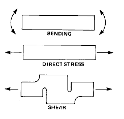

Design Considerations
Design ConsiderationsStrain Gage Based Transducers reference
Although the force-measuring transducer, or "load cell," as it is frequently known was developed and commercialized about 40 years ago, its principal area of application was, until recently, industrial - i.e., in process control, heavy machinery, test engineering, and the like. During the 1980's, however, the load cell invaded (and largely conquered) the weighing field. With the need for scales having electrical output signals to operate the popular digital displays, and to interface with microprocessors and computers, the strain gage load cell has come to represent the most practical weighing means. Electronic scales based on strain gage load cells are now commonplace. One of the largest uses is in retailing, but others include postal and shipping scales, crane scales, laboratory scales, on-board weighing for trucks, and agricultural applications.
The most critical mechanical component in any load cell, or other strain gage transducer, is generally the spring element. Broadly stated, the function of the spring element is to serve as the reaction for the applied load; and, in doing so, to focus the effect of the load into an isolated, preferably uniform, strain field where strain gages can be placed for load measurement.
Implicit in this definition is the assumption that the strain level in the gaged area of the spring element responds in a linear-elastic manner to the applied load. In other words, the ideal transducer would be characterized by an unvarying, proportional relationship between the strain and the load. Achievement of this simple-sounding but elusive goal is central to all transducer design. The task is made difficult, to begin with, by the presence of numerous other operational and economic constraints which must be simultaneously satisfied to result in a practical, viable commercial transducer. Compounding the difficulty is the fact that a variety of effects, which would be of second- or third-order importance in normal engineering practice, can become highly significant in a precision instrument. Because of these considerations, we should thoroughly examine the design of spring elements before going on to other aspects of load cell design.
For purposes of this discussion, load cell spring elements will be divided into three classes, according to the type of strain field used. These are: bending, direct stress, and shear, as schematically illustrated below.

While different forms of all three types are used in contemporary transducer practice, the richest variety in configuration is undoubtedly found among the bending elements, and these will be described first. Preparatory to doing so, however, it will be fruitful to review a list of basic design considerations and criteria which apply to all transducer spring elements. With this background, it will be easier to appreciate the underlying reasons for some of the exotic configurations used in commercial load cells.
See also:
Direct Stress Elements
Shear Elements